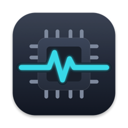

FixStat
A free, open-source menu bar monitor and diagnostics app for Mac repair technicians. Sensor names verified per Mac model, battery cell data, SSD health and guided hardware tests.


Built for the repair bench
Sensors with real names
Instead of raw keys like Tp09 or TG0B, sensors are named per Mac model from load tests on the bench, and marked verified or estimated.
Battery in detail
Design and raw capacity, cell voltages with an imbalance warning, cycle count, the adapter's real input power, an originality check and a capacity test.
SSD health
SMART of NVMe and AHCI SSDs and of SATA drives in USB enclosures, a write–verify stress test and a read-only surface scan.
Hardware check
Keyboard, trackpad surface, display, speakers, camera, Touch Bar, ports, fans under load, temperature sensors and the live lid angle, with a PDF report.
Power and drain
Live power rails and system power on Apple Silicon, battery drain while asleep and while shut down, and a live monitor with CSV recording.
Read-only and private
Never writes to the SMC, needs no administrator rights for monitoring and collects no data. The only network access is an optional daily update check.
Live monitor

Temperature sensor check